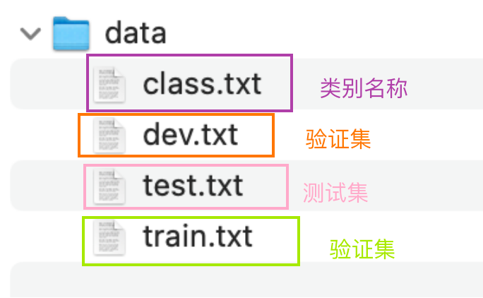

数据集介绍¶
学习目标
- 熟悉相关数据的格式和样例.
1.项目数据概览¶
- 项目中的数据来源基本分为3大种类:
- 第一类: 公司内部数据部门提供.
- 情况1: 数据平台有预处理, 提供的是"成品数据".
- 情况2: 数据平台没有预处理, 只告诉开发人员"数据路径".
- 情况3: 原始数据就没有, 需要开发人员沟通不同部分, 获取"业务数据".
- 第二类: 甲方提需求, 并提供数据.
- 情况1: 甲方有预处理数据, 提供的基本是"半成品数据".
- 情况2: 甲方只负责"埋点", 后续数据需要开发人员处理.
- 情况3: 甲方数据"匮乏", 甚至数据"缺失".
- 第三类: 需求画大饼阶段, 没有数据, 没有GPU, 只有"蓝图"和"展望".
- 第一类: 公司内部数据部门提供.
- 本项目中的数据已经由字节预处理并完成了标注信息. 属于第一类中的情况1.
- 数据路径: 02-data/data/
- data文件夹内容展示:

- 训练集数据:
02-data/data/train.txt
共180000条.
中华女子学院：本科层次仅1专业招男生 3
两天价网站背后重重迷雾：做个网站究竟要多少钱 4
东5环海棠公社230-290平2居准现房98折优惠 1
卡佩罗：告诉你德国脚生猛的原因 不希望英德战踢点球 7
82岁老太为学生做饭扫地44年获授港大荣誉院士 5
记者回访地震中可乐男孩：将受邀赴美国参观 5
冯德伦徐若�隔空传情 默认其是女友 9
传郭晶晶欲落户香港战伦敦奥运 装修别墅当婚房 1
《赤壁OL》攻城战诸侯战硝烟又起 8
“手机钱包”亮相科博会 4
上海2010上半年四六级考试报名4月8日前完成 3
李永波称李宗伟难阻林丹取胜 透露谢杏芳有望出战 7
3岁女童下体红肿 自称被幼儿园老师用尺子捅伤 5
金证顾问：过山车行情意味着什么 2
谁料地王如此虚 1
《光环5》Logo泄露 Kinect版几无悬念 8
海淀区领秀新硅谷宽景大宅预计10月底开盘 1
柴志坤：土地供应量不断从紧 地价难现07水平(图) 1
伊达传说EDDA Online 8
三联书店建起书香巷 4
宇航员尿液堵塞国际空间站水循环系统 4
研究发现开车技术差或与基因相关 6
皇马输球替补席闹丑闻 队副女球迷公然调情(视频) 7
北京建工与市政府再度合作推出郭庄子限价房 1
组图：李欣汝素颜出镜拍低碳环保大片 9
train.txt中包含180000行样本, 每行包括两列, 第一列为待分类的中文文本, 第二列是数字化标签, 中间用\t作为分隔符.
- 测试集数据:
02-data/data/test.txt
共10000条.
词汇阅读是关键 08年考研暑期英语复习全指南 3
中国人民公安大学2012年硕士研究生目录及书目 3
日本地震：金吉列关注在日学子系列报道 3
名师辅导：2012考研英语虚拟语气三种用法 3
自考经验谈：自考生毕业论文选题技巧 3
本科未录取还有这些路可以走 3
2009年成人高考招生统一考试时间表 3
去新西兰体验舌尖上的饕餮之旅(组图) 3
四级阅读与考研阅读比较分析与应试策略 3
备考2012高考作文必读美文50篇(一) 3
名师详解考研复试英语听力备考策略 3
热议：艺考合格证是高考升学王牌吗(组图) 3
研究生办替考网站续：幕后老板年赚近百万(图) 3
2011年高考文科综合试题(重庆卷) 3
56所高校预估2009年湖北录取分数线出炉 3
公共英语(PETS)写作中常见的逻辑词汇汇总 3
时评：高考应成为教育公平的“助推器” 3
九成外国人愿继续在日生活 六成留学生未返校 3
教育部回应“取消高考户籍限制” 3
2008年甘肃省高招不同于往年悬念叠出(图) 3
送考队伍成海 高考场外那些煎熬的心 3
09年小语种报考完全指南：仍须以高考为重(图) 3
四六级考前阅读冲刺：如何发挥正常水平 3
北京市海淀区09年高考第二次模拟考试题 3
倪震：我国首位参加GRE考试的盲人大学生 3
test.txt中包含10000行样本, 每行包括两列, 第一列为待分类的中文文本, 第二列是数字化标签, 中 间用\t作为分隔符.
- 验证集数据:
02-data/data/dev.txt
共10000条.
体验2D巅峰 倚天屠龙记十大创新概览 8
60年铁树开花形状似玉米芯(组图) 5
同步A股首秀：港股缩量回调 2
中青宝sg现场抓拍 兔子舞热辣表演 8
锌价难续去年辉煌 0
2岁男童爬窗台不慎7楼坠下获救(图) 5
布拉特：放球员一条生路吧 FIFA能消化俱乐部的攻击 7
金科西府 名墅天成 1
状元心经：考前一周重点是回顾和整理 3
发改委治理涉企收费每年为企业减负超百亿 6
一年网事扫荡10年纷扰开心网李鬼之争和平落幕 4
2010英国新政府“三把火”或影响留学业 3
俄达吉斯坦共和国一名区长被枪杀 6
朝鲜要求日本对过去罪行道歉和赔偿 6
《口袋妖怪 黑白》日本首周贩售255万 8
图文：借贷成本上涨致俄罗斯铝业净利下滑21% 2
组图：新《三国》再曝海量剧照 火战场面极震撼 9
麻辣点评：如何走出“被留学”的尴尬 3
美股评论：SUN的苦涩曙光 2
拾荒男子捡到任命书假冒老总 连骗二十多位女子 5
英国夫妇再育“黑白”双胞胎 4
从跟班到战友 灵兽伴你畅游传奇世界 8
你有随身听 我有随身看：掌上故事会 8
一封1968年的平信45.92万元成交 0
女主人成功说服杀人躲避者自首 5
dev.txt中包含10000行样本, 每行包括两列, 第一列为待分类的中文文本, 第二列是数字化标签, 中 间用\t作为分隔符.
- 类别集合数据:
02-data/data/class.txt
共10条.
finance
realty
stocks
education
science
society
politics
sports
game
entertainment
class.txt中包含10个类别标签, 每行一个标签, 为英文单词的展示格式.
2.小节总结¶
对项目数据进行了介绍, 本项目拿到手的已经是数据平台部门处理好的"优质数据", 我们只需要将全部精力放在功能实现, 模型优化上即可.